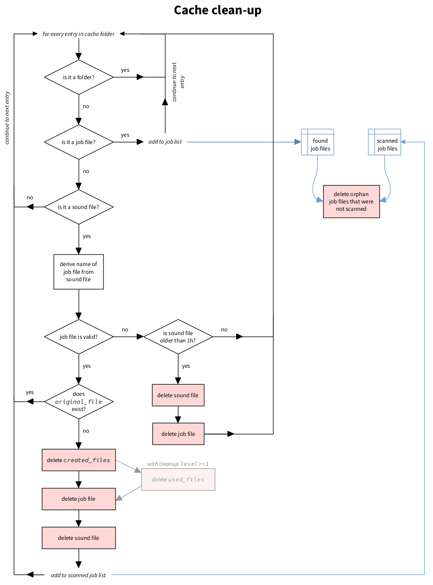

Source documentation¶
vt_server¶
This is a Voice Transformation server. It receives command stacks as JSON arrays to process sound files that are local on the server, and returns a pointer to the processed file.
-
class
vt_server.VTHandler(request, client_address, server)¶ Bases:
socketserver.StreamRequestHandlerThe handler for the server requests.
Requests are JSON encoded. It is required that they contain the following field action which can receive one of two values: “status” or “process”.
If action is “status”, then no other field is required.
If action is “process”, then the following fields are required:
- file
The sound file(s) that will be processed. This can be an array of files, in which case they are all processed and then concatenated. This can also be a string where the files are separated with
" >> "(note that this includes a space before, and a space after).- stack
The list of processes that will be run on the file. Each item in the stack is an object that is specific to the type of processing. Each object must have a module attribute that is used to dispatch the processing. This can also be a list of stacks that apply to everyone of the files if file is an array (otherwise, the same stack is applied to all files before concatenation).
The following fields are optional:
- mode
“sync” [default], “async” or “hash”. In sync mode, the server will only send a response when the file is processed. In async mode, the server will respond immediately with a “wait” response. The client can probe periodically with the same request until the file is returned. hash only returns the hash of the request that is used as identifier.
- format
Specifies the output format of the sound files. Can be “flac”, “wav” (or anything else supported by libsndfile, or “mp3” (if LAME is installed). If none is provided, then the default cache format is used (see
vt_server_config).- format_options
Specifies options (as a dictionary) for the selected format. At the moment, only bitrate is specified (as an integer in kbps) for format “mp3” (see
vt_server_brain.encode_to_format()for details).
The response is also JSON and has the following form:
- out
“ok” or “error”
- details
In case of success, this contains the outcome of the processing (or “wait” for the “async” mode). In case of error, this has some details about the error.
-
handle()¶ The handler function. It basically receives the query in JSON, tries to parse it and then dispatch to
vt_server_brain.process()if it worked. Then sends the response back to the client.
-
class
vt_server.VTServer(server_address, RequestHandlerClass, bind_and_activate=True)¶ Bases:
socketserver.ThreadingTCPServer-
server_activate()¶ Called by constructor to activate the server.
May be overridden.
-
server_close()¶ Called to clean-up the server.
May be overridden.
-
-
vt_server.main()¶ Imports the configuration, instantiates a
VTServerand starts thevt_server_brain.Janitorbefore starting the server itself.Runs forever until the server receives SIGINT.
vt_server_brain¶
Dispatches the processing to the right underlings. The brain also manages the various processes and the main cache. Each request is dispatched to its own process as a job.
Jobs have a signature that is based on the task at hand:
the file it applies to,
and the process instruction stack list.
These are serialized (using pickle) and then hashed (in md5) to create the job signature. The job signature is also used for the name of the cache file.
Everytime a job is submitted, the brain first checks if the file already exists.
If the file exists, it is returned right away. If the file does not exist, then
we check if the job is in the JOBS list (a managed dictionary). If it is in
the list, then we just reply ‘wait’ to the client. If not, then the brain
creates the job and starts the process.
In ‘sync’ mode, the dispatcher waits for the process to be completed.
In ‘async’ mode it returns right away and sends a ‘wait’ message. The client can send the same request a bit later. If the job is still being processed, the server sends the same ‘wait’ response. If the job is completed, then the job target file exists and is returned right away.
Individual tasks listed in the task list can have their own cache system, but they need to manage it themselves.
A Janitor is scouring the JOBS list to check on jobs that may be finished,
and remove them from the list.
-
vt_server_brain.JOBS= <DictProxy object, typeid 'dict'>¶ This is the list of current jobs (actually a managed dict).
-
class
vt_server_brain.Janitor(interval)¶ Bases:
objectThe janitor periodically checks the job list to see if there are any finished jobs, and then gets rid of them.
-
call_repeatedly(interval)¶
-
static
janitor_job()¶ Checks periodically on the
JOBSlist to see if there are any process that is finished and needs removing.
-
kill()¶
-
-
vt_server_brain.encode_to_format(in_filename, out_filename, fmt, fmt_options)¶ Encodes the file to the required format. This is for formats that are not supported by libsndfile (yet), like mp3.
-
vt_server_brain.job_signature(req)¶
-
vt_server_brain.multi_process(req)¶ This is called from
process()if multiple files have been provided as input.
-
vt_server_brain.process(req)¶ Creates jobs (populating the
JOBSlist), checks on cache and dispatches processing threads.- Parameters
req (dict) – The query received by the server.
-
vt_server_brain.process_async(req, h, out_filename)¶ This is the function that is threaded to run the core of the module. It dispatches calls to the appropriate modules, and deals with their cache.
It also updates the
JOBlist when a job is finished, and create a job file with some information about the job (useful for cache cleaning).If a module takes a ‘file’ as argument, the file can be a query. It will be executed in sync mode from the current
process_async()process.
vt_server_modules¶
This module contains a number of process_... functions, imports
the other process modules and defines the PATCH that dispatches
process module names to the right process function.
-
vt_server_modules.PATCH= {'mixin': <function process_mixin>, 'pad': <function process_pad>, 'ramp': <function process_ramp>, 'time-reverse': <function process_time_reverse>, 'vocoder': <function process_vocoder>, 'world': <function process_world>}¶ The
PATCHis used to dispatch stack item modules to their corresponding function
-
vt_server_modules.process_mixin(in_filename, m, out_filename)¶ “mixin” adds another sound file (B) to the input file (A). The arguments are:
- Parameters
file – The file that needs to be added to the input file.
levels – A 2-element array containing the gains in dB applied to the A and B.
pad – A 4-element array that specifies the before and after padding of A and B (in seconds):
[A.before, A.after, B.before, B.after]. Note that this could also be done with sub-queries, but doing it here will reduce the number of cache files generated.align – ‘left’, ‘center’, or ‘right’. When the two sounds files are not the same length, the shorter one will be padded so as to be aligned as described with the other one. This is applied after padding.
If the two sound files are not of the same sampling frequency, they are resampled to the max of the two.
If the two sound files are not the same shape (number of channels), the one with fewer channels is duplicated to have the same number of channels as the one with the most.
-
vt_server_modules.process_pad(in_filename, m, out_filename)¶ “pad” adds silence before and/or after the sound. It takes before and/or after as arguments, specifying the duration of silence in seconds.
-
vt_server_modules.process_ramp(in_filename, m, out_filename)¶ “ramp” smoothes the onset and/or offset of a signal by applying a ramp. The parameters are:
- Parameters
duration – In seconds. If a single number, it is applied to both onset and offset. If a vector is given, then it specifies [onset, offset]. A value of zero means no ramp.
shape – Either ‘linear’ (default) or ‘cosine’.
-
vt_server_modules.process_time_reverse(in_filename, m, out_filename)¶ “time-reverse” flips temporally the input. It doesn’t take any argument.
vt_server_module_world¶
This module defines the world processor based on pyworld, a module wrapping Morise’s WORLD vocoder.
Here are some examples of module instructions:
{
"module": "world",
"f0": "*2",
"vtl": "-3.8st"
}
If a key is missing (here, duration) it is considered as None, which means this part is left unchanged.
f0 can take the following forms:
*followed by a number, in which case it is multiplicating ratio applied to the whole f0 contour. For instance*2.a positive or negative number followed by a unit (
Hzorst). This will behave like an offset, adding so many Hertz or so many semitones to the f0 contour.
~followed by a number, followed by a unit (onlyHz). This will set the average f0 to the defined value.
vtl is defined similarly:
*represents a multiplier for the vocal-tract length. Beware, this is not a multiplier for the spectral envelope, but its inverse.offsets are defined using the unit
stonly.
duration:
the
*multiplier can also be used.an offset can be defined in seconds (using unit
s).the absolute duration can be set using
~followed by a value and thesunit.
Note that in v0.2.8, WORLD is making the sounds 1 frame (5 ms) too long if no duration is specified. If you specify the duration, it is generated accurately.
-
class
vt_server_module_world.Fast2DInterp(x, y, z, ofrv=None, type='linear')¶ Bases:
objectCreates an interpolant object based on
scipy.interpolate.RectBivariateSplinebut dealing with out of range values.The constructor is:
Fast2DInterp(x, y, z, ofrv=None)wherexandyare 1D arrays andzis a 2D array. The optional argumentofrvdefines the value used for out of range inputs. IfofrvisNone, then the default behaviour ofRectBivariateSplineis kept, i.e. the closest value is returned.The default type is
linear, which then makes use ofscipy.interpolate.interp2d. Withcubic, theRectBivariateSplineis used.Note that the class is not so useful in the end when used with
linear, but is useful if you want to use cubic-splines.-
interp(x, y)¶
-
interp_(x, y)¶
-
is_in_range(w, r)¶
-
-
vt_server_module_world.check_arguments(mo, purpose)¶ Receives an
rematch object from parsing module arguments and do some basic checking.- Parameters
mo (re.Match) – The argument to parse.
purpose – Purpose is ‘f0’, ‘vtl’ or ‘duration’.
- Returns
A tuple of the form
(args_ok, args):args_okis True or False depending on whether the argument is fine or not.argscontains a dictionary with the parsed out argument:- v
is the value as a float.
- u
is the unit for offsets, or None for ratios.
- ~
if
True, then it denotes an absolute (average) value instead of an offset.
-
vt_server_module_world.parse_arguments(m)¶
-
vt_server_module_world.process_world(in_filename, m, out_filename)¶ Processes the file in_filename according to parameters m, and stores results in out_filename.
The first step is to analyse the sound file to extract its f0, spectral envelope and aperiodicity map. The results of this operation are cached in a pickle file.
The parameters for this module are:
- Parameters
f0 – Either an absolute f0 value in Hertz
{### Hz}, a change in semitones{### st}or a ratio{\*###}.vtl – Same for vocal-tract length (only semitones and ratio).
duration – Either an absolute duration in seconds
{~###s}, an offset in seconds{+/-###s}, or a ratio{\*###}.
Just to be clear, these parameters must be keys of the dictionary m.
-
vt_server_module_world.regularize_arrays(*args)¶ Making sure the arrays passed as arguments are in the right format for pyworld.
vt_server_module_vocoder¶
This module defines the world processor based on vocoder, a MATLAB vocoder designed to be highly programmable.
Here is and example of module instructions:
{
"module": "vocoder",
"fs": 44100,
"analysis_filters": {
"f": { "fmin": 100, "fmax": 8000, "n": 8, "scale": "greenwood" },
"method": { "family": "butterworth", "order": 3, "zero-phase": true }
},
"synthesis_filters": "analysis_filters",
"envelope": {
"method": "low-pass",
"rectify": "half-wave",
"order": 2,
"fc": 160
},
"synthesis": {
"carrier": "sin",
"filter_before": false,
"filter_after": true
}
}
The fs attribute is optional but can be used to speed up processing. The filter definitions that are generated depend on the sampling frequency, so the it has to be known to generate the filters. If the argument is not passed, it will be read from the file that needs processing. Passing the sampling frequency as an attribute will speed things up as we don’t need to open the sound file to check its sampling rate. However, beware that if the fs does not match that of the file, you will get an error.
The other attributes are as follows:
analysis_filters¶
analysis_filters is a dictionary defining the filterbank used to analyse the input signal. It defines both the cutoff frequencies f and the filtering method.
f: Filterbank frequencies¶
These can either be specified as an array of values, using a predefined setting, or by using a regular method.
If f is a numerical array, the values are used as frequencies in Hertz.
If f is a string, it refers to a predefined setting. The predefined values are: ci24 and hr90k refering to the default map of cochlear implant manufacturers Cochlear and Advanced Bionics, respectively.
Otherwise f is a dictionary with the following items:
- fmin
The starting frequency of the filterbank.
- fmax
The end frequency of the filterbank.
- n
The number of channels.
- scale
[optional] The scale on which the frequencies are divided into channels. Default is log. Possible values are greenwood, log and linear.
- shift
[optional] A shift in millimiters, towards the base. Note that the shift is applied after all other calculations so the fmin and fmax boundaries will not be respected anymore.
Filtering method¶
A dictionary with the following elements:
- family
The type of filter. At the moment only butterworth is implemented.
For butterworth, the following parameters have to be provided:
- order
The actual order of the filter. Watch out, that this is the order that is actually achieved. Choosing true for zero-phase means only even numbers can be provided.
- zero-phase
Whether a zero-phase filter is being used. If true, then
filtfilt()is used instead offilt().Unlike in the MATLAB version, this is implemented with second-order section filters (
sosfiltfilt()andsosfilt()).
synthesis_filters¶
It can be the string “analysis_filters” to make them identical to the analysis filters.
This is also what happens if the element is omitted or null.
Otherwise it can be a dictionary similar to analysis_filters. The number of channels has to be the same. If it differs, an error will be returned.
envelope¶
That specifies how the envelope is extracted.
- method
Can be low-pass or hilbert.
For low-pass, the envelope is extracted with rectification and low-pass filtering. The following parameters are required:
- rectify
The wave rectification method: half-wave or full-wave.
- order
The order of the filter used for envelope extraction. Again, this is the effective order, so only even numbered are accepted because the envelope is extracted with a zero-phase filter.
- fc
The cutoff of the envelope extraction in Hertz. Can be a single value or a value per channel.
synthesis¶
The synthesis field describes how the resynthesis should be performed.
- carrier
Can be noise or sin (low-noise and pshc are not implemented).
- filter_before
If true, the carrier is filtered before multiplication with the envelope (default is false).
- filter_after
If true, the modulated carrier is refiltered in the band to suppress sidebands (default is true). Keep in mind that if you filter broadband carriers both before and after modulation you may alter the spectral shape of your signal.
If the carrier is noise, then a random seed can be provided in random_seed to have frozen noise. If not the random number generator will be initialized with the current clock. Note that for multi-channel audio files, the seed is used for each channel. If no seed is given, the various chennels will have different noises as carriers. To have correlated noise across chennels, pass in a (random) seed.
If the carrier is sin, the geometric mean of the band’s cutoffs are used unless attribute f is provided, in which case it defines the frequencies.
Content¶
-
vt_server_module_vocoder.FB_PRESETS= {'ci24': [188, 313, 438, 563, 688, 813, 938, 1063, 1188, 1313, 1563, 1813, 2063, 2313, 2688, 3063, 3563, 4063, 4688, 5313, 6063, 6938, 7938], 'hr90k': [250, 416, 494, 587, 697, 828, 983, 1168, 1387, 1648, 1958, 2326, 2762, 3281, 3898, 4630, 8700]}¶ Presets for manufacturers’ filterbanks.
-
vt_server_module_vocoder.env_hilbert(x)¶
-
vt_server_module_vocoder.env_lowpass(x, rectif, filter, filter_function)¶
-
vt_server_module_vocoder.freq2mm(frq)¶ Converts frequency to millimeters from apex using Greenwood’s formula.
-
vt_server_module_vocoder.mm2freq(mm)¶ Converts millimeters from apex to frequency using Greenwood’s formula.
-
vt_server_module_vocoder.parse_arguments(m, in_filename)¶ Parses arguments for the vocoder module. Unlike some other modules, it is important to know the sampling frequency we will be operating at. The filename can be read from the in_filename or it can be provided to speed-up things. Watchout, though, if the passed fs does not match that of in_filename, you’ll get an error.
-
vt_server_module_vocoder.parse_carrier_definition(carrier, synth_fbd)¶ Parses a carrier definition for the synthesis block.
-
vt_server_module_vocoder.parse_envelope_definition(env_def, fs)¶ Parses an envelope definition.
-
vt_server_module_vocoder.parse_filterbank_definition(fbd, fs)¶ Parses a filterbank definition, used for analysis_filters and synthesis_filters.
-
vt_server_module_vocoder.parse_filterbank_method(method, freq, fs)¶ Parses the method part of the filterbank definition and creates the filters based on the freq array and the sampling frequency fs.
-
vt_server_module_vocoder.parse_frequency_array(fa)¶ Parses a frequency array definition as part of a filter bank definition.
-
vt_server_module_vocoder.process_vocoder(in_filename, m, out_filename)¶ The main processing function for the module.
vt_server_config¶
VTServer configuration file management.
-
vt_server_config.CONFIG= {'cachefolder': '/var/cache/vt_server', 'cacheformat': 'flac', 'cacheformatoptions': None, 'host': 'localhost', 'logfile': '/var/log/vt_server.log', 'port': 1996}¶ The dictionary holding the current configuration (used in other modules). It is instanciated with
read_configuration().
-
vt_server_config.find_configuration()¶ Attempts to find a configuration file in known places:
/usr/local/etc/vt_server,/etc/vt_server,./.
-
vt_server_config.read_configuration(config_filename=None)¶ Reads a configuration file. If none is provided, will try to find one in default places. If that fails or if the config file is invalid will fall back to default options.
vt_server_logging¶
VTServer logging facilities.
-
class
vt_server_logging.VTServerLogFormatter¶ Bases:
logging.Formatter-
format(record)¶ Format the specified record as text.
The record’s attribute dictionary is used as the operand to a string formatting operation which yields the returned string. Before formatting the dictionary, a couple of preparatory steps are carried out. The message attribute of the record is computed using LogRecord.getMessage(). If the formatting string uses the time (as determined by a call to usesTime(), formatTime() is called to format the event time. If there is exception information, it is formatted using formatException() and appended to the message.
-
-
vt_server_logging.get_FileHandler(logfile)¶
Cache clean-up¶
The cache can become big and obsolete, so it is a good idea to clean it up regularly. In particular, if the original file does not exist anymore, all the processed files should be removed.
For that, we use the job file that is created by the vt_server_brain.
The job file lists all the files that were created (or used) during a specific job.
If no job file exist for a specific cache file, we erase it. Note, that we may be
missing cache files from individual modules with this approach.
The vt_server_cache module has a command line interface so you can easily
put it in your crontab.
usage: vt_server_cache.py [-h] [-l LEVEL] [-s] [folder]
positional arguments:
folder The cache folder to cleanse. If none is provided, we
will try to read from the default option file.
optional arguments:
-h, --help show this help message and exit
-l LEVEL, --level LEVEL
Level of cleansing [default 0]. 0 will remove all
files created by jobs that are related to files that
do not exist anymore. 1 will also remove files that
were used in the process. 1996 will remove *ALL* files
from the cache.
-s, --simulate Will not do anything, but will show what it would do.
The cache cleaning procedure is described below.
Note that the cache cleaning is not really optimal at the moment and cache may blow up. If you use level 0 as default you may have to run level 1 or 1996 once in a while to reset everything, although this blunt approach sort of defeats the purpose of having a cache.
A better cache procedure will be developed in the future.
-
vt_server_cache.cleanup_cache(fold=None, level=0, simulate=False)¶ The function that cleans up the cache. The level argument is used to specify how spooky clean you want your cache:
0 is the standard (and default) level, it will scoure the cache folder for generated files. If a file does not have an eponym .job file, it will be deleted. Otherwise, the job file is opened, and, if the original sound file does not exist any more, all files listed as “created” are deleted. The final sound file (or symlinks) created are deleted as well as the job file.
1 is slightly more aggressive, where all files that are “created” or “used” will be deleted.
1996 will make your cache spooky clean by eliminating all files (but preserving the directory structure).
-
vt_server_cache.delete_file(f, simulate, silent=False)¶
-
vt_server_cache.spooky_cleanup_cache(fold, simulate)¶